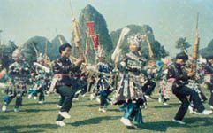
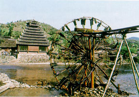

【编者按】广西境内居住着壮、汉、瑶、苗、侗、仫佬、毛南、回、京、彝、水、仡佬等12个世居民族，另外还有25个少数民族成分。广西 是以壮族为主体民族实行区域自治的地方，除了成立省一级行政区域的广西壮族自治区外，还建有12个少数民族自治县，在瑶族聚居的地方先后建立金秀、都安、巴马、富川、大化、恭城等6个瑶族自治县；在苗族聚居的地方建立融水苗族自治县；在侗族聚居的地方建立三江侗族自治县；在仫佬族聚居的地方建立罗城仫佬族自治县；在毛南族聚居的地方建立环江毛南族自治县。还在有多个少数民族聚居的地方分别建立龙胜和隆林两个各族自治县。
在广西的少数民族都保留着本民族传统的风俗习惯，在社交礼仪、婚姻习俗、服装打扮、饮食文化、歌舞娱乐方面都有着各自的特点，甚有情趣。跟随我们走进金秀大瑶山、融水苗族自治县、三江侗族自治县以及著名的“京族三岛”，您将可以一窥那风采各异的民族风情。

广西融水苗族的踩堂芦笙舞以场面盛大、壮观而闻名。在宽阔的踩堂坪上，常常几十支芦笙齐奏，数百甚至上千人共舞。
融水拥有苗、瑶、侗、壮、汉等多种民族，全县人口48万，苗族占38%，故俗称大苗山。这里民族节日多姿多彩：有正月十三的芦笙节、正有十六的古龙坡会，正月十七的芒哥节、二月初二的抢花炮、三月初三的唱龙亭、四月二十四的廿四炮、六月初六的新禾节，还有苗年、斗马节、闹鱼节等。那多姿多彩的芦笙踩堂、拉鼓、芒哥、踩脚求爱等风情，令人赏心悦目，还有世界独一无二的斗马，令人动魄惊心。这些原始古朴的节目，与独特的木楼建筑，手工精巧的服饰、别有风味的民族餐饮，奇异的恋爱婚俗等，构成了一幅绚丽多姿的民族风情画卷。
苗族斗马节
斗马，是苗族人民最喜欢的传统娱乐活动之一，已具有悠久的历史。自古以来，广西融水苗族自治县的苗家村村寨寨都养有勇猛善斗的斗马（公马）。他们每逢闲暇，便相互邀约，骑马赴会，以斗马来取乐。这样天长日久、一代传一代，斗马便成为苗族人民最喜爱的民俗游艺项目。如苗族的三月三，苗年、芦笙节、新乐节和古龙坡会等节日的活动中都少不了斗马这个项目。融水苗族自治县已把每年１１月２６日县成立纪念日定为"苗族斗马节"。
斗马场地一般都设在村寨间较宽广的平地上。每逢斗马节、便人山人海，锣鼓喧天，芦笙阵阵，彩旗飘舞，热闹非凡。中午时分，一支支斗马队在乐曲声中向斗马场汇集。当元老（大会主持者）宣布斗马开始后，首先由一个身着苗族服装的后生（年轻人）牵着一匹母马进场中心，接着有两个后生各牵着自己的斗马，分别从场两端入场。当他俩一扬鞭放手，两只斗马便为占有和保护那匹母马而扬鬃长啸，向对方冲去展开搏斗，此时此刻、斗马场欢声雷动，烟尘滚滚，猛烈惊险、扣人心弦。你看那两马时而奋蹄直追，疾如闪电；时而咬成一团，难解难分；时而扬蹄嚎叫，企图慑报对手。经一番苦斗，输者狂奔逃窜，赢者则奋蹄直追。在观众一片热烈的掌声和喝彩声中，由元老当场给夺冠的斗马戴上大红花，人们也纷纷涌来同斗马主人握手、拥抱，鸣放鞭炮，以表示热烈的祝贺。
侗族大歌是当今世界上十分罕见的多声部、无指挥、无伴奏民间合唱音乐，它与侗寨鼓楼、侗乡花桥一起被称为侗族文化“三大宝”而闻名遐迩。
从柳州乘车往北行驶200公里，进入位于湖南、贵州、广西三省毗邻地带的三江侗乡，临河沿溪一带，会有许多极富民族特色的民舍木楼，这就是保留完整的侗乡民居，它们带有浓郁的传统民间文化和神秘色彩，令人向往。以低山和丘陵地貌为主的三江县，属云贵高原的雪峰山、越城岭和苗岭山脉的延伸地带，县境内山岭叠翠，蜿蜒起伏；在这里生活的主体民族是侗族，占全县人口的53.6%。由于侗族同胞的衣、吃、住、行都具有十分突出鲜明的民族特色，再加上侗乡神奇秀丽的自然风光以及丰富多彩的传统节日，使三江成为桂中地区民族风情与风光旅游的一个热点。到三江旅游，游客可以欣赏到建筑艺术独特、举世闻名的国宝——程阳风雨桥以及马胖鼓楼和侗乡民舍，可以领略到侗家纯朴的古风民俗，还可以参加规模盛大的民族传统节日活动。
以鼓楼、风雨桥及侗族民居等木制建筑闻名世界的三江侗族自治县，位于广西、贵州、湖南三省区交界处。侗族村寨依山傍水，鳞次栉比的吊脚木楼、鼓楼群、风雨桥以及水车群，构成当地侗族民众生活的重要组成部分，也成为一道独特的历史人文景观。目前，三江侗族自治县境内共有侗族风雨桥一百零八座，鼓楼一百五十九座，还有大量的侗族民居建筑群，集中分布在全县十三个乡镇和三个流域内，约有十八万侗族民众在日常生活中使用这些建筑。
程阳风雨桥
程阳永济桥是侗族地区规模最大的风雨桥，该桥始建于1912年，成于1924年。桥面长77.76米，桥台近距64.70米，河面至桥亭高20.25米，有五墩四孔。由于技艺的高超，全桥不用一钉一铆。桥分两层、楼阁五个，阁高二丈。楼阁造型，有两座是五层四角塔形楼亭，两座是五层殿形楼亭，分布在桥的两端，互为对衬，中间一座是六角塔形楼阁。在五个楼阁之间的跨桥上面，盖上青瓦衔接，使整座大桥从上到下，浑然一体，重瓴联阁，雄伟壮观。由于楼阁亭檐巧妙地运用了杠杆原理，采用方吊柱形式，使亭檐婷婷而上，势态如飞，令人神往。尤其令人赞叹的是，桥墩之间跨度很大，侗家的能工巧匠们，就在这桥墩上面铺两层下短上长的连排大杉木为挑梁(又叫挑枕)而把两层正梁架在挑梁之上。由于有桥墩为支点，以挑梁为杠杆，从而缩短了跨度，减少了挠度同时又把桥亭竖在两排正梁接头处，使其起到重力平衡作用。因此，负重近二十斤的正梁始终稳固平衡。桥亭、楼阁、殿宇及走廊均有金扁、雕刻等待，长廊尽头又有石刻碑记，可惜这些艺术珍品已遭破坏殆尽。一九八二年程阳桥被列为全国重点文物保护单位之一。郭沫若副委员长一九六五年为阳阳桥赋诗题字，更为这座大桥生色增辉，题“程阳桥” 三字，诗为：“艳说林溪风雨桥，桥长廿丈四寻高；重瓴联阁怡神巧，列砥横流入望遥。竹木一身坚胜铁，茶林万载茁新苗。何时得上三江高，学把犁锄事体劳。” 由于程阳桥造型奇特，雄伟壮观，国内外友人到来参观、拍摄和描绘者逐年增多，中国邮政也曾印制程阳桥纪念邮票。程阳永济桥以它高超的建筑技艺和雄伟风姿扬名天下，是世界四大历史名桥之一（其他三桥为：中国石拱赵州桥、铁索沪定桥和罗马尼亚的钢梁诺娃上沃桥)。

马胖鼓楼位于广西三江侗族自治县八江乡马胖寨，距县城26公里。始建于1928年，重建于1943年。楼呈宝塔形，由4根长13米、腰围近2米的大杉木组成长方形支柱，外加小柱和飞檐，层层叠穿而成。楼高15米，长宽11米，共9层。层层叠架，重瓴飞檐，如雄鹰展翅。楼檐雕龙绘凤，画花饰锦，细致精美。楼顶尖处，塑有象征吉祥的千年鹤。除4根象征四季平安的高大主柱之外，在主柱构成的正方形对角和边线的延长线上，还有24根粗大的、也成正方形排列的边柱。 28根柱子的垫台，都是用上等青石制成，并刻有生动形象的图案。该楼像一座壮丽的宫殿，全用杉木凿榫衔接，没有一颗铁钉。修建此楼的工匠雷文兴是一位多才多艺的侗族建筑师，他在既无图纸，又无计算仪器的条件下，用一把曲尺、一杆竹笔，在用半边竹杆做成的“丈杆”上绘图。经师徒12人精心设计，精心施工，使从不同角度向主柱和边柱斜穿直套的卯眼和榫头分毫不差，充分体现了侗族建筑艺术的高超。
茶山瑶 盘瑶 花篮瑶 坳瑶
广西壮族自治区古朴自然的土地上，生活着壮、瑶、苗、侗等十多个少数民族。距桂林200公里的广西金秀瑶族自治县，集中生活着瑶族的五大分支（茶山瑶、盘瑶、花篮瑶、山子瑶、坳瑶）。中国社会学家费孝通先生曾五上金秀，并感叹说：“中国研究瑶族的中心在金秀。”因而，金秀又有“第一瑶乡”的美称。
瑶寨成丁礼－－度戒
“度戒”是金秀瑶族民间隆重的宗教活动之一。柳州金秀大瑶山的瑶族男子一般在18岁左右，村寨里就要为他举行成年礼--"度戒"。经过"度戒"的瑶族小青年就算是成年人了，开始受到公众的信任和社会的尊重。
在以前，"度戒"的仪式很繁琐，有"上刀山，过火海"之说。而现在只经历"跳云台"的考验即可。所谓"云台"就是正方形的高台，以四条长木为柱，高一丈二尺或一丈八尺，各柱相距一尺五寸，上铺木板，在一边扎有横木为梯，以便攀登。接受"度戒"的瑶族小青年，在长者的带领下登上"云台"，长者向他们表示美好的祝愿后小青年就蹲下闭目，手抱双膝，勇敢地从台上侧翻跳下，谓?quot;跳云台"。当小青年跳落到铺有棉絮或稻草的藤网后，在地面上等候着人们就连网把他抬起围绕"云台"走三圈，表示这位瑶族小青年已经完成了"度戒"，取得成年人的资格了。这时，周围的观众热烈欢呼表示祝贺。
"度戒"一般在盘王节举行，仪式极为隆重。瑶族小青年也兴高采烈地接受"度戒"，因为它是自己进入成年人行列的一种标志。这种仪式世代相传下来，它包含着年轻一代成长的期望和祝愿。
京族主要聚居在素有“京族三岛”之称的广西壮族自治区防城各族自治县江平乡的污尾、巫头、山心三个小岛上，其余分布在谭吉、红坎、恒望。 京族过去被称为越族，1958年正式改名为京族。京族有自已的语言，没有文字，绝大多数京族人通用汉语（广州方言）和汉文。京族人喜欢的“唱哈”、竹竿舞、独弦琴，被誉为京族文化的三颗“珍珠”。
京族哈节
“哈”是京语译音，是歌唱和祭神的意思，“哈节”是京族一年一度的隆重节日。每年的农历八月初十，或十月初十，都要由“翁村（即村老）”负责组织安排这项民族民间风俗活动。一是被派为“哈头”的人家要献出若干猪肉、糯米、酒、香烛和草席，来参加节日聚会的亲朋，也要自带酒肴和大家一起团团坐，亲密密、热闹闹地过节。二是敲锣打鼓的迎神、祭神活动，过年前一天，“翁村”和“哈头”组织一支迎神队伍，去海边迎接“镇海大王”，让他坐神椅，抬到“哈亭”内的神殿，给他立个高大堂皇的神牌。正式过年那天，人们香烛不绝拜大神、祭大神。在神殿上，与“镇海大王”大神并排的还有管护山林、高山、安娄、兴道等大王。京族同胞崇拜镇海大王的观念与本民族从事渔业有关。
“哈节”作为京族的一种传统文化，在不断地继承和发扬。而且是越过越红火。过节那天，在“哈亭”内祭神的京家姑娘，身穿白衣衫、彩色长裙，头顶大碗，碗里小碟子竖三支燃烛，叫“天灯”。“天灯”闪亮，愿日子过得亮亮，献上京家颗颗亮心，奉献给尊敬的大神们，祈求保佑平安、家家康乐，渔业发达兴旺。祭神完毕，是听“哈”，再接着是“乡饮”，最后是把诸位大神送回去。“哈节”这才落下帷幕